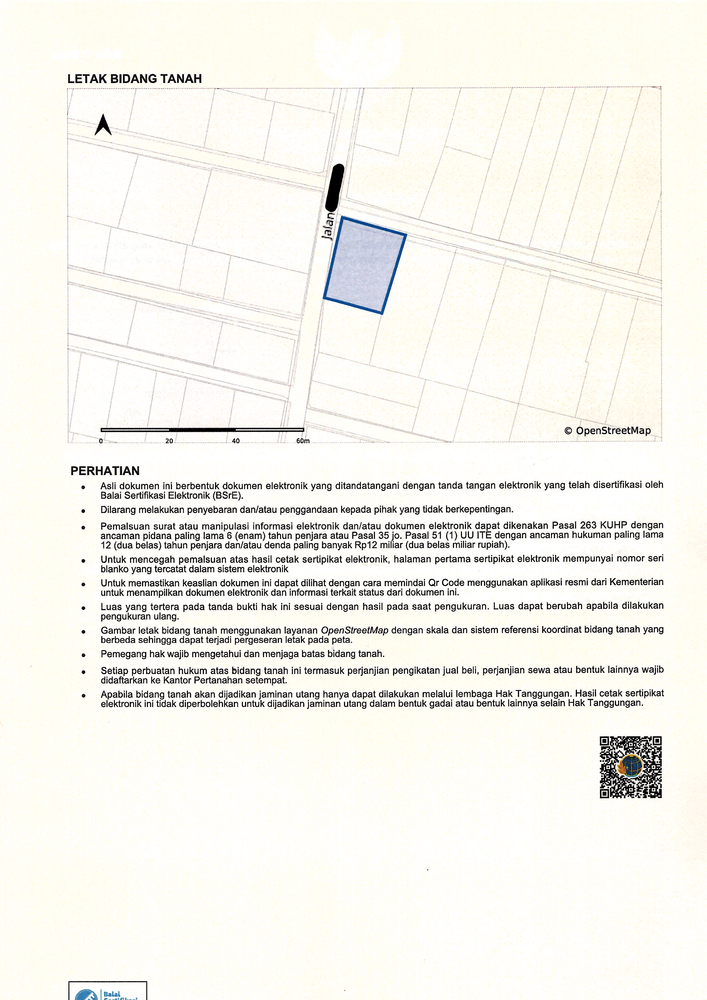
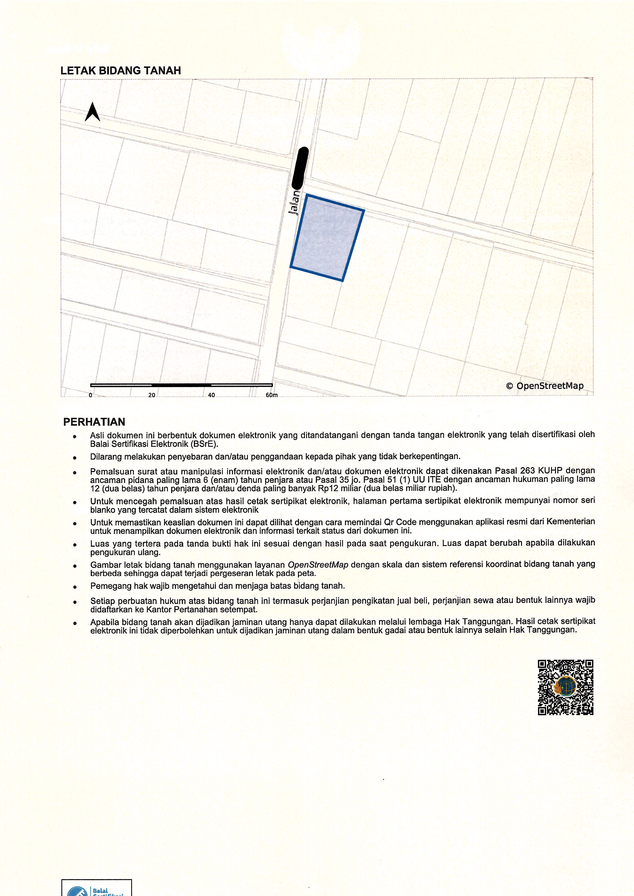

1
Cara Mudah Mendapatkan Sertifikat-EL
Pengantar
- ✔ Apa itu Sertifikat-EL? Dokumen digital bukti kepemilikan tanah oleh BPN (Peraturan Menteri ATR/BPN No. 3 Tahun 2023).
- ✔ Manfaat:
- •Aman dari kerusakan/kehilangan.
- •Proses cepat dan efisien.
- •Akses online via Sentuh Tanahku.
2
Syarat Pengurusan Sertifikat-EL
- ✔Formulir permohonan (ditandatangani di atas materai).
- ✔Fotokopi KTP dan KK (diverifikasi).
- ✔Bukti kepemilikan (Petok Leter C, AJB, SHM).
- ✔Surat ukur/peta bidang tanah (jika ada).
- ✔Fotokopi SPPT PBB tahun berjalan.
- ✔Surat kuasa (jika dikuasakan).
- ✔Sertifikat fisik (untuk konversi).
- ⚠Catatan: Tanah tidak dalam sengketa.
3
Cara Membuat Sertifikat-EL (Pendaftaran Baru)
- 1.Pengumpulan Data: Ajukan permohonan di Kantor Pertanahan atau via Sentuh Tanahku.
- 2.Pengukuran & Pemetaan: Petugas BPN ukur tanah, pemohon hadir sebagai saksi.
- 3.Pemeriksaan Yuridis: Verifikasi kepemilikan via dokumen dan saksi.
- 4.Penerbitan Sertifikat-EL: Disahkan dengan tanda tangan elektronik, akses via Sentuh Tanahku.
4
Cara Konversi Sertifikat Fisik ke Sertifikat-EL
- 1.Persiapan Dokumen: Sertifikat fisik, formulir, KTP, KK, akta badan hukum (jika badan hukum).
- 2.Pengajuan: Ajukan di Kantor Pertanahan, bayar PNPB blanko.
- 3.Validasi: BPN cek data, sertifikat fisik ditarik sebagai warkah.
- 4.Penerbitan Sertifikat-EL: Simpan di brankas elektronik, akses via Sentuh Tanahku.
5
Tips dan Catatan Penting
- ✔Keabsahan: Berlaku 2 tahun, perpanjang jika kedaluwarsa. Cek via QR Code.
- ✔Tips:
- •Urus langsung di Kantor Pertanahan (hindari calo).
- •Pastikan dokumen lengkap.
- •Simpan akses brankas elektronik dengan aman.
- ✔Waktu: 60-97 hari (pendaftaran baru).
6
Penutup
- ✔Kesimpulan: Sertifikat-EL solusi modern, aman, efisien, akses via Sentuh Tanahku.
- ✔Ayo Bertindak: Daftar/konversi sekarang di Kantor Pertanahan atau aplikasi.
- ✔Sumber: Kementerian ATR/BPN, Peraturan Menteri No. 3 Tahun 2023, Sentuh Tanahku.
Terima kasih!
 
